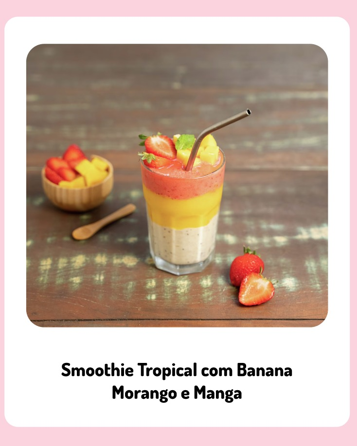

| 
|
|
Ingredientes:
- 1 banana-nanica madura média congelada em rodelas
- Meia xícara de chá de leite ou bebida vegetal
- 5 morangos
- Meia manga
|
|
|
Modo de preparo:
- 1 No liquidificador, coloque a banana e 1/3 do leite e use a função pulsar só até obter um creme. Separe.
- 2 Repita o mesmo processo com o morango e depois com a manga.
- 3 Disponha começando pelo cremo de banana, depois o de manga e por último adicione o creme de morango.
- 4 Se desejar, decore com a Granola
|
|